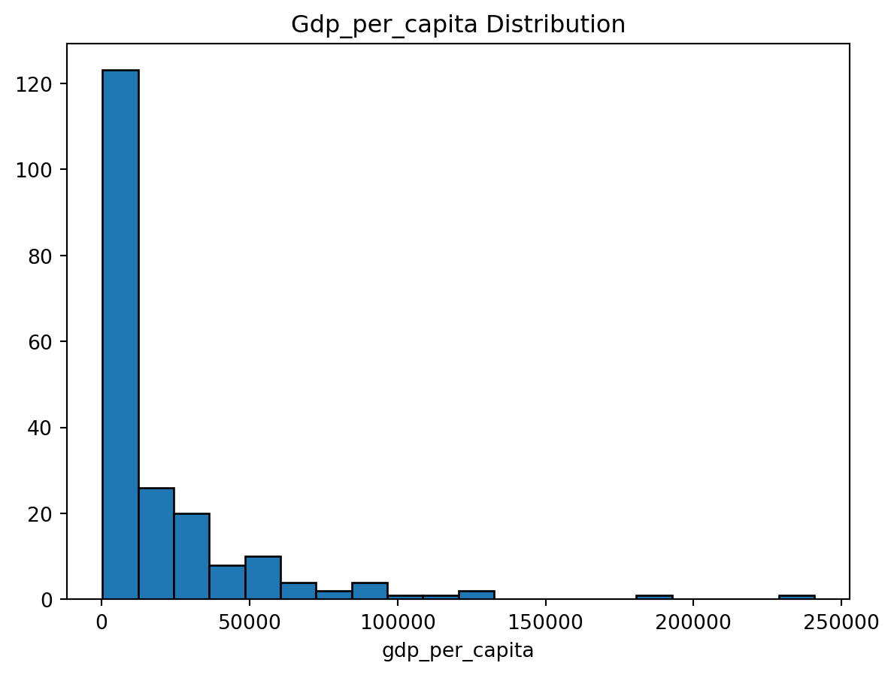
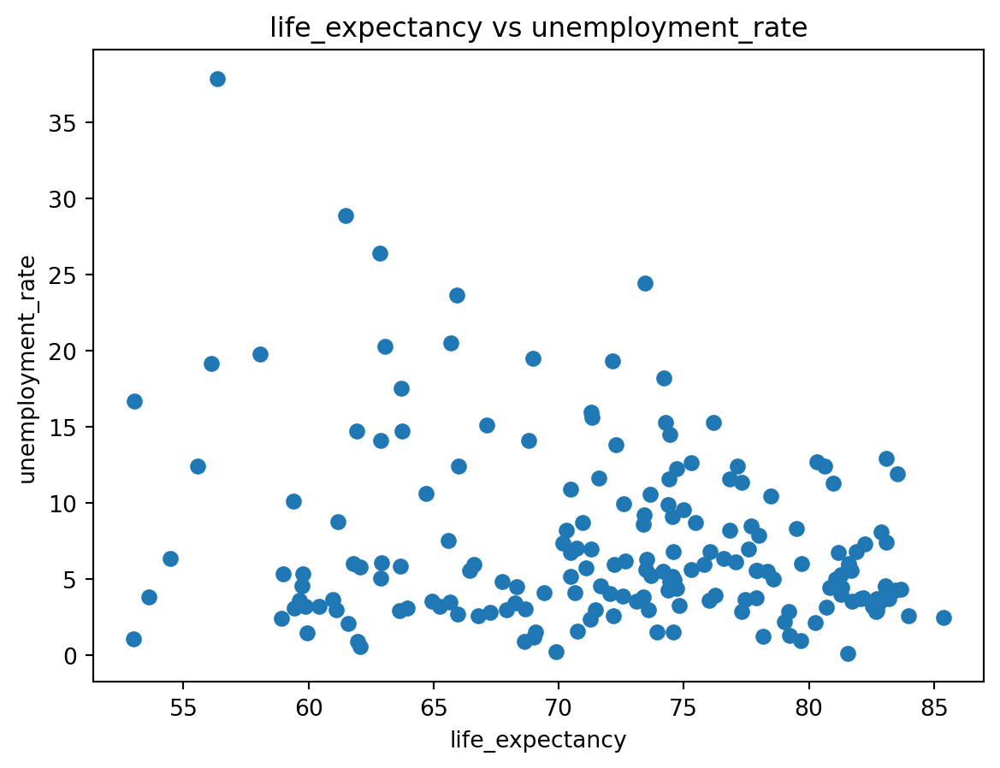

Exploratory Data Analysis on World Development Indicators dataset
3. Exploratory Data Analysis
I performed analysis on three variables using pandas(team 2020): gdp_per_capita, life_expectancy, and unemployment_rate.
- This is the key statistics of the three indicators
gdp_per_capita life_expectancy unemployment_rate
count 203.000000 209.000000 186.000000
mean 20345.707649 72.416519 7.268661
std 31308.942225 7.713322 5.827726
min 259.025031 52.997000 0.130000
25% 2570.563284 66.782000 3.500750
50% 7587.588173 73.514634 5.537500
75% 25982.630050 78.475000 9.455250
max 240862.182448 85.377000 37.852000- This is the correlation matrix of the three indicators.
gdp_per_capita life_expectancy unemployment_rate
gdp_per_capita 1.000000 0.638609 -0.216684
life_expectancy 0.638609 1.000000 -0.217359
unemployment_rate -0.216684 -0.217359 1.000000- There seem to exist a moderate positive correlation between GDP per capita and Life Expectancy.
4. Visualizations
The visualization is created using Matplotlib from (Hunter 2007).

- As shown in Fig 4, there is a moderate negative correlation between life expectanct and unemplotment rate.
5. Table
| Variables | gdp_per_capita | life_expectancy | unemployment_rate |
|---|---|---|---|
| Mean | 20345.71 | 72.42 | 7.27 |
| Median | 7587.59 | 73.51 | 5.54 |
| Standard Deviation | 31308.94 | 7.71 | 5.83 |
- The table’s statistics align with Fig 3, showing the high standard deviation of gdp_per_capita.
References
Hunter, J. D. 2007. “Matplotlib: A 2D Graphics Environment.” Computing in Science & Engineering. https://doi.org/10.1109/MCSE.2007.55.
team, The pandas development. 2020. “Pandas-Dev/Pandas: Pandas.” Zenodo. https://doi.org/10.5281/zenodo.3509134.